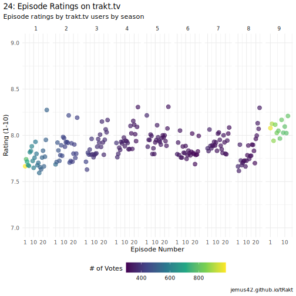

Step 1: Search
Use the search function to find the show you’re looking for. The show “24” is a particularly good example for a show with a bad name, because If we just search for “24”, we’ll get a wrong result due to ambiguity. To nudge the search function to find the show we’re looking for, we can specify the year of release:
show_info <- search_query("24", years = 2001, type = "show")
show_info
#> # A tibble: 1 × 36
#> score type title year tagline overview runtime country trailer homepage
#> <dbl> <chr> <chr> <int> <chr> <chr> <int> <chr> <chr> <chr>
#> 1 5.79e17 show 24 2001 A lot can… "Counte… 45 us https:… https:/…
#> # ℹ 26 more variables: status <chr>, rating <dbl>, votes <int>,
#> # comment_count <int>, updated_at <dttm>, language <chr>, languages <list>,
#> # available_translations <list>, genres <list>, subgenres <list>,
#> # original_title <chr>, social_ids <df[,4]>, first_aired <dttm>,
#> # aired_episodes <int>, certification <chr>, network <chr>, airs_day <chr>,
#> # airs_time <chr>, airs_timezone <chr>, trakt <chr>, slug <chr>, imdb <chr>,
#> # tmdb <chr>, tvdb <chr>, plex_guid <chr>, plex_slug <chr>Now we have the basic show info to work with, including the
title and various IDs.
Step 2: Use the ID
Use the trakt ID for subsequent API calls, which is
guaranteed to be always available and unique on trakt.tv. Now we’ll use
seasons_summary() to get data for all seasons of the show,
while also getting an additional list-column containing all episode
data, which includes user ratings.
seasons <- seasons_summary(show_info$trakt, extended = "full", episodes = TRUE)
glimpse(seasons)
#> Rows: 9
#> Columns: 17
#> $ title <chr> "Season 1", "Season 2", "Season 3", "Season 4", "Season…
#> $ votes <int> 401, 295, 248, 221, 203, 185, 177, 175, 171
#> $ season <int> 1, 2, 3, 4, 5, 6, 7, 8, 9
#> $ rating <dbl> 8.15711, 8.14576, 8.03629, 8.15385, 8.34975, 7.40541, 7…
#> $ network <lgl> NA, NA, NA, NA, NA, NA, NA, NA, NA
#> $ overview <chr> "Counter-terrorism agent Jack Bauer attempts to stop th…
#> $ updated_at <dttm> 2026-07-01 08:20:26, 2026-07-01 08:20:26, 2026-07-01 08…
#> $ first_aired <dttm> 2001-11-07 02:00:00, 2002-10-30 02:00:00, 2003-10-29 02…
#> $ episode_count <int> 24, 24, 24, 24, 24, 24, 24, 24, 12
#> $ total_runtime <int> 1024, 1072, 1066, 1080, 1080, 1080, 1080, 1080, 540
#> $ aired_episodes <int> 24, 24, 24, 24, 24, 24, 24, 24, 12
#> $ original_title <chr> "Season 1", "Season 2", "Season 3", "Season 4", "Season…
#> $ episodes <list> [<tbl_df[24 x 23]>], [<tbl_df[24 x 23]>], [<tbl_df[24 …
#> $ tmdb <chr> "5845", "5846", "5847", "5848", "5849", "5850", "5851"…
#> $ tvdb <chr> "10063", "10064", "10065", "10066", "10067", "16794", "…
#> $ trakt <chr> "6262", "6263", "6264", "6265", "6266", "6267", "6268",…
#> $ plex_guid <chr> "602e68e0d17ae1002dc137f5", "602e68f2d17ae1002dc13d5e",…Step 3: Tidying up
We’re interested in the $episodes list-column, which
needs unnesting. In this case we can use dplyr::bind_rows()
to take the list of tibbles and rbind them all
together, meaning the result is a tibble of the episode
data we care about.
episodes <- bind_rows(seasons$episodes)
glimpse(episodes)
#> Rows: 204
#> Columns: 23
#> $ title <chr> "12:00 A.M.-1:00 A.M.", "1:00 A.M.-2:00 A.M.", …
#> $ votes <int> 988, 783, 712, 690, 643, 624, 609, 600, 603, 58…
#> $ episode <int> 1, 2, 3, 4, 5, 6, 7, 8, 9, 10, 11, 12, 13, 14, …
#> $ rating <dbl> 7.66599, 7.74074, 7.71629, 7.67826, 7.67030, 7.…
#> $ season <int> 1, 1, 1, 1, 1, 1, 1, 1, 1, 1, 1, 1, 1, 1, 1, 1,…
#> $ runtime <int> 43, 42, 43, 42, 42, 43, 43, 43, 43, 43, 43, 43,…
#> $ overview <chr> "Moments after discovering his daughter, Kimber…
#> $ released <date> 2001-11-07, 2001-11-14, 2001-11-21, 2001-11-28…
#> $ episode_abs <int> 1, 2, 3, 4, 5, 6, 7, 8, 9, 10, 11, 12, 13, 14, …
#> $ updated_at <dttm> 2026-07-01 06:27:31, 2026-06-30 16:33:59, 2026…
#> $ first_aired <dttm> 2001-11-07 02:00:00, 2001-11-14 02:00:00, 2001…
#> $ episode_type <chr> "series_premiere", "standard", "standard", "sta…
#> $ after_credits <lgl> FALSE, FALSE, FALSE, FALSE, FALSE, FALSE, FALSE…
#> $ comment_count <int> 8, 3, 2, 3, 3, 4, 3, 2, 2, 3, 2, 3, 1, 2, 4, 5,…
#> $ during_credits <lgl> FALSE, FALSE, FALSE, FALSE, FALSE, FALSE, FALSE…
#> $ original_title <chr> "12:00 A.M.-1:00 A.M.", "1:00 A.M.-2:00 A.M.", …
#> $ available_translations <list> [], [], [], [], [], [], [], [], [], [], [], []…
#> $ effective_release_date <chr> "2001-11-07T02:00:00.000Z", "2001-11-14T02:00:0…
#> $ imdb <chr> "tt0502165", "tt0502167", "tt0502169", "tt05021…
#> $ tmdb <chr> "972745", "972752", "972753", "134397", "134398…
#> $ tvdb <chr> "189255", "189256", "189257", "189258", "189259…
#> $ trakt <chr> "146247", "146248", "146249", "146250", "146251…
#> $ plex_guid <chr> "5d9c13506c3e37001ed024b3", "5d9c13506c3e37001e…Step 4: Graph!
Now we have our episode data in a tidy form, might as well look at it.
ggplot(data = episodes, aes(x = episode, y = rating, color = votes)) +
geom_point(size = 3, alpha = 2 / 3) +
facet_wrap(~season, nrow = 1, scales = "free_x") +
scale_x_continuous(breaks = c(1, 10, 20), expand = c(0, 3)) +
scale_y_continuous(breaks = seq(0, 10, .5), minor_breaks = seq(0, 10, .25), limits = c(7, 9)) +
scale_color_viridis_c() +
guides(color = guide_colorbar(barwidth = unit(6, "cm"), title.vjust = .75)) +
labs(
title = "24: Episode Ratings on trakt.tv",
subtitle = "Episode ratings by trakt.tv users by season",
x = "Episode Number",
y = "Rating (1-10)",
color = "# of Votes",
caption = "jemus42.github.io/tRakt"
) +
theme_minimal() +
theme(
plot.title.position = "plot",
legend.position = "bottom"
)
plot of chunk 24-episodes-plot